Lindokuhle Langa
About Me
I am a Computer Engineering graduate from the Cape Peninsula University of Technology (CPUT) and a final-year BEngTech Honours student in Computer Engineering. My work spans software development, Kubernetes security, artificial intelligence, networking, embedded systems, databases and engineering analysis. I also work as an IT Service Desk Operator at CPUT, where I troubleshoot end-user and connectivity issues, manage incidents and communicate with users in a professional support environment.
I enjoy building and testing practical systems that connect software with real engineering problems. My current portfolio includes Python and JavaScript applications, REST/database work, network optimisation, cloud-native security research, AI computer vision, embedded control and electrical power-system analysis. I am open to graduate and junior opportunities where I can continue developing as a software, systems or computer engineer.
Featured Projects
Kubernetes Security Framework
Honours research on automated Kubernetes security posture assessment, policy enforcement and controlled performance evaluation using repeatable test manifests and policy-as-code.
IEEE Six-Bus Power System Analysis
Six-bus power-system study covering per-unit conversion, Ybus formation, Newton-Raphson load flow, MATLAB/Simulink and DIgSILENT modelling, three-phase short-circuit analysis and overcurrent protection.
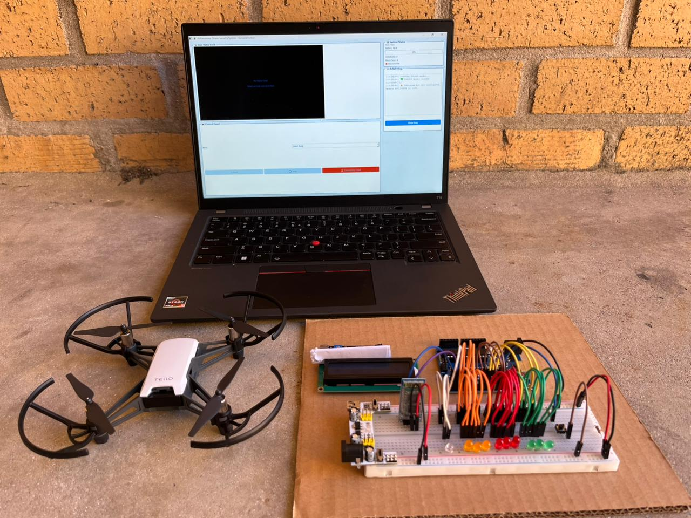
AI/MLAutonomous Drone Navigation
AI-powered drone with YOLOv8n object detection achieving 87% accuracy during project testing, multi-threaded architecture, and real-time data processing for intelligent navigation and obstacle avoidance.
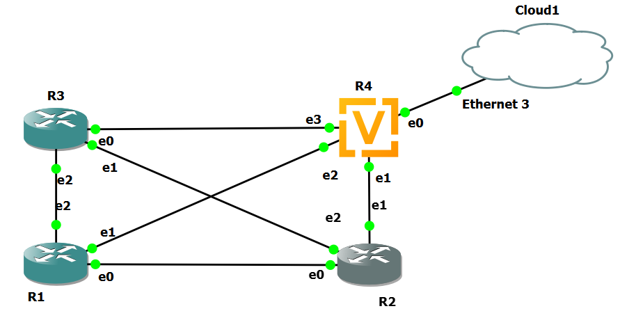
NetworkingSoftware-Defined Network System
Advanced network system using IS-IS, OSPF, and BGP protocols with optimization algorithms for traffic routing and automated performance monitoring.
Computer & Internetwork Security GA5
Secured a simulated CPUT Bellville–District Six inter-campus network using an IPsec site-to-site VPN, SSHv2/AAA hardening, management ACLs, brute-force protection and an inline IPS design.
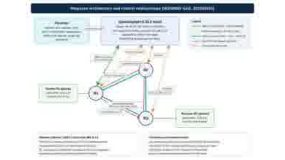
Next Generation NetworksNGN580S GA5 — Controller-Driven MPLS-TE
Integrated IOS XRv, OpenDaylight, PCEP, RESTCONF and RSVP-TE in GNS3 to delegate, modify, create and verify controller-managed MPLS traffic-engineered LSPs.
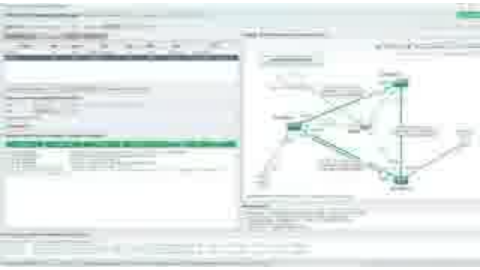
Network AutomationNGN580S Final Summative — Traffic Engineering Application
Built a Python/Tkinter application that detects congestion from live telemetry, evaluates candidate paths, performs controller-based MPLS-TE actions and verifies the result on the router.
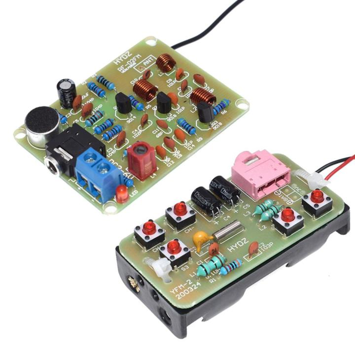
EmbeddedFM Transmitter & Receiver
Custom RF communication system with digital signal processing, frequency modulation, signal amplification, and noise reduction for clear audio transmission.
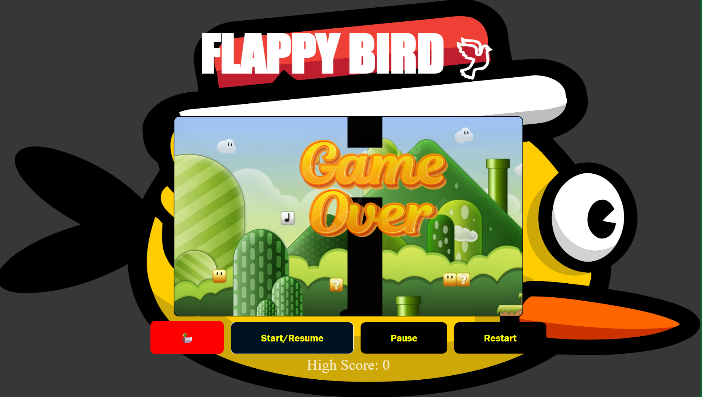
Web DevWebGL Flappy Bird Game
Interactive browser-based game using WebGL and JavaScript with real-time rendering, physics engine, collision detection, and responsive UI design.
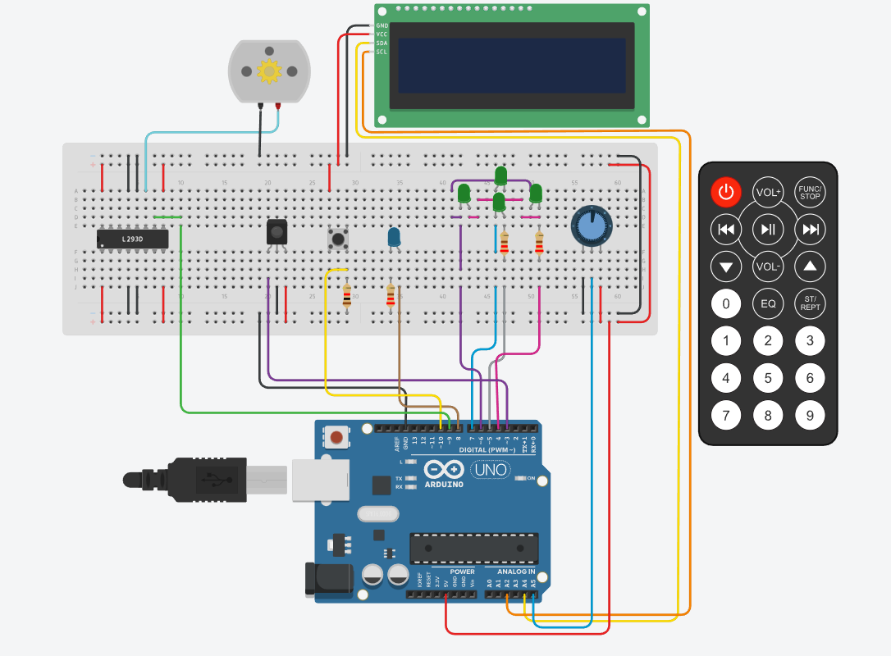
EmbeddedSolar Washing Machine
Arduino-Based Energy Management System with Solar Optimization
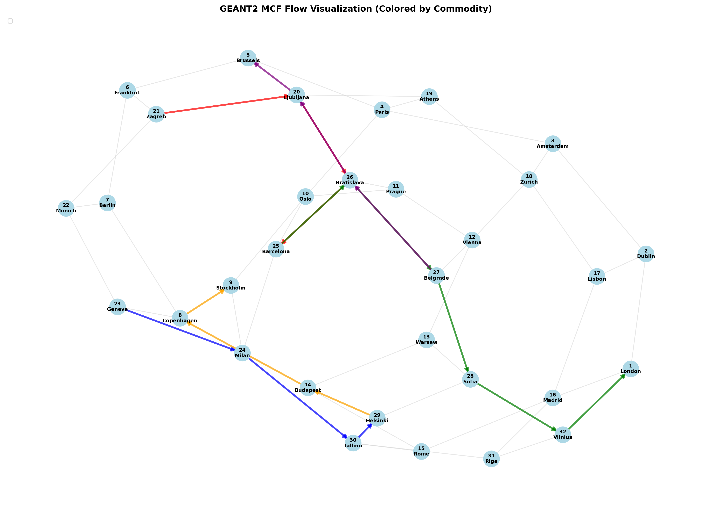
NetworkingNetwork Traffic Engineering & Optimization
Advanced traffic engineering using graph theory and linear programming on GEANT2 topology. Implemented Min-Cost Flow, Min-Max Utilization, and Multi-Commodity Flow models achieving 14% max utilization across 32 nodes and 54 links with optimal load balancing.
Technical Skills
Python, Java, JavaScript, C, C++, SQL, Bash, HTML5 and CSS3.
Flask, SQLAlchemy, REST APIs, MySQL, Git, GitHub, Jupyter Lab, Pandas and data visualisation.
Docker, Kubernetes, Linux (Ubuntu), OPA Gatekeeper, Trivy, kube-bench, policy-as-code and GitHub Actions exposure.
YOLOv8, OpenCV, NetworkX, PuLP, Matplotlib, optimisation, graph modelling and real-time processing.
TCP/IP, VLANs, OSPF, BGP, IS-IS, SDN, GNS3, Cisco Packet Tracer and performance troubleshooting.
Arduino, ESP32, UART/PySerial, sensors, relay control, electronics, MATLAB/Simulink, power-flow and protection fundamentals.
Education & Experience
Certifications & Training
Get In Touch
I'm open to graduate and junior opportunities in software, systems, cybersecurity, networking, embedded and engineering technology. Let's connect and discuss how I can contribute to your team!
Send Me a Message
Autonomous Drone Navigation System
AI-Powered Navigation with Real-Time Object Detection
Project Overview
Developed a sophisticated autonomous drone navigation system integrating AI-powered object detection, multi-threaded architecture, and real-time data processing. The project demonstrates advanced software engineering principles applied to embedded systems and robotics. The aboveshows the system design of the entire Autonomous Drone Navigation System with Alerts.
Key Features
- AI-Powered Detection: YOLOv8 object detection algorithm achieving 80%+ accuracy for real-time person identification
- Multi-threaded Architecture: Parallel processing of video streams (60+ FPS), flight control commands, and GUI updates with thread-safe queues
- Hardware Integration: Arduino microcontroller with LED feedback system communicating via PySerial at 9600 baud
- Telegram Alert System: Automated notifications with timestamped images sent to mobile devices using Telegram Bot API
- Professional GUI: PyQt5-based interface with glassmorphism design, animated buttons, status indicators, and real-time video display
- Autonomous Navigation: Customizable patrol patterns (square, front-back) with configurable distance parameters
- Dual Video Sources: Support for drone camera and IP webcam with seamless switching
- Real-time Data Processing: Sub-100ms latency for detection, processing, and hardware response
- Battery Management: Real-time battery monitoring with visual indicators and low-battery warnings
- Emergency Controls: Fail-safe mechanisms including emergency landing and system shutdown procedures
Technical Implementation
The system architecture consists of three main components: the perception layer using computer vision for object detection, the decision layer implementing path planning algorithms, and the control layer managing motor control and flight dynamics. Python was chosen for rapid development and integration with machine learning libraries, while C++ handled performance-critical operations.
Hardware-Software Integration
The project demonstrates full-stack IoT development with seamless hardware-software integration:
- Arduino Microcontroller: Custom C++ firmware for LED alert system with serial communication protocol (9600 baud)
- PySerial Communication: Bidirectional data exchange between Python application and Arduino for real-time hardware control
- DJI Tello Drone: Integration via djitellopy SDK for flight control, telemetry data retrieval, and video streaming
- Dual Video Sources: Support for both drone camera and IP webcam (phone) with automatic source switching
- Telegram Bot Integration: Real-time alert system with image uploads using Telegram API for remote monitoring
- LED Indicator System: Visual feedback mechanism controlled by Arduino responding to detection events
Software Architecture
- Multi-threaded Design: Separate threads for video processing, GUI updates, autonomous patrol, and sensor monitoring preventing blocking operations
- PyQt5 Framework: Professional desktop application with glassmorphism UI, animated widgets, and real-time status indicators
- Event-Driven Architecture: Signal-slot mechanism for thread-safe communication between video processing and GUI rendering
- State Machine Pattern: Robust state management for different operational modes (preview, phone mode, drone patrol)
- Error Handling: Comprehensive try-catch blocks with graceful degradation and user feedback mechanisms
Communication Protocols
- Serial Communication: UART protocol at 9600 baud for Arduino control with command parsing ("ON", "OFF", "TEST", "B")
- WiFi Streaming: UDP video stream from Tello drone at 720p resolution with H.264 encoding
- HTTP API: IP webcam integration via HTTP video stream (MJPEG format)
- Telegram API: HTTPS POST requests for message and photo uploads with multipart/form-data encoding
- Inter-thread Communication: PyQt signals/slots for thread-safe data transfer between processing and UI threads
Challenges & Solutions
- Real-time Performance: Used the YOLOv8n model with standard PC processing to balance detection accuracy and latency, with testing showing 87% accuracy and detection latency below 1.5 seconds
- Data Synchronization: Implemented thread-safe queue systems with mutex locks to prevent race conditions in multi-threaded environment
- Power Efficiency: Developed adaptive processing modes that adjust detection frequency based on environmental complexity
Results & Impact
Successfully demonstrated autonomous navigation through complex environments with 80%+ detection accuracy and 95%+ obstacle avoidance success rate. The project showcased ability to integrate multiple technologies (AI, embedded systems) into a cohesive, production-ready solution. Demonstrated the real world enginering solution by recieving feedback as proof of triggered alerts and complete system integration. Received excellent feedback from faculty for system architecture and documentation quality.
Project Gallery
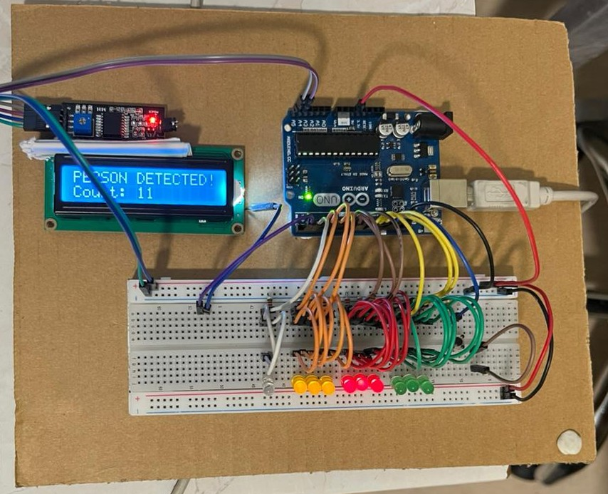
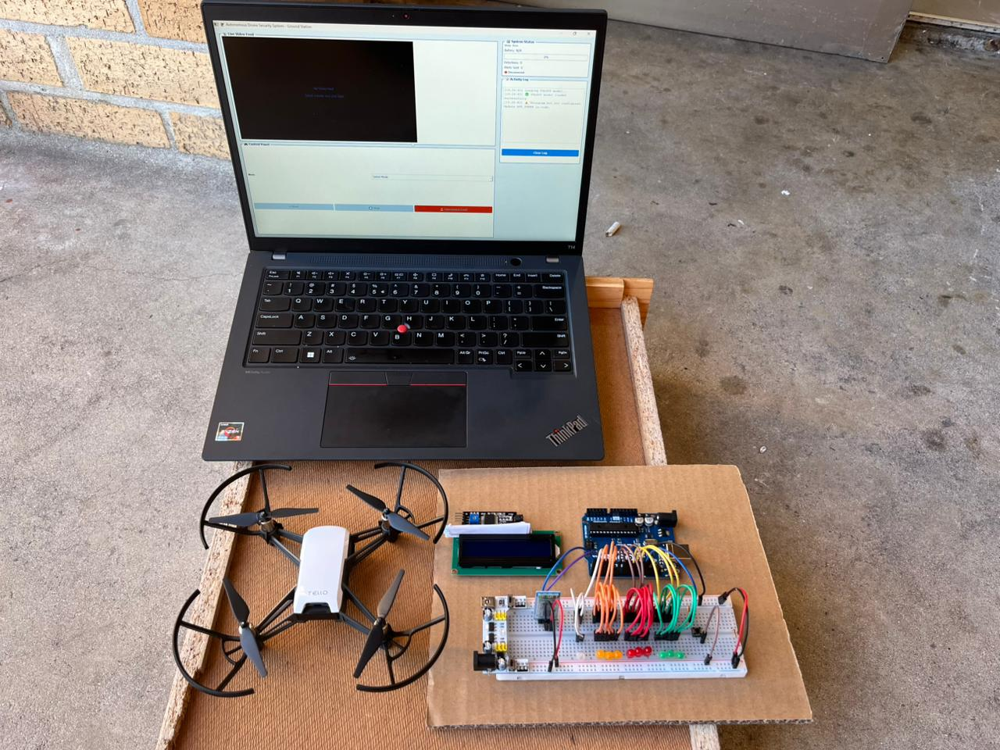
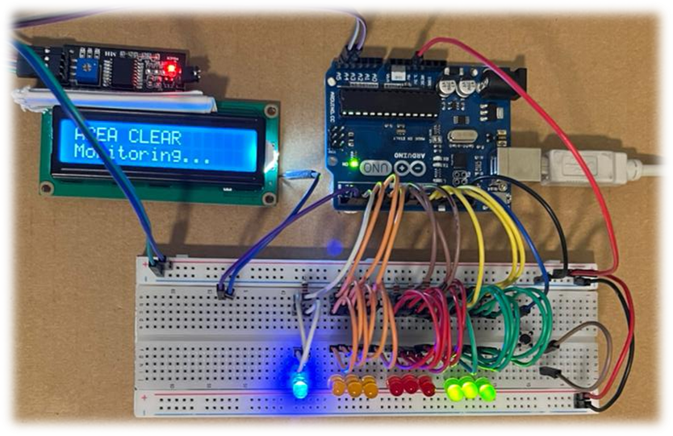
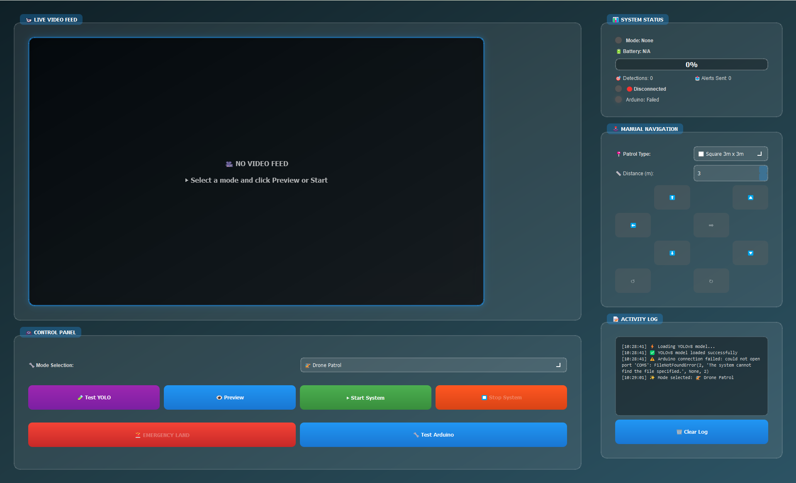
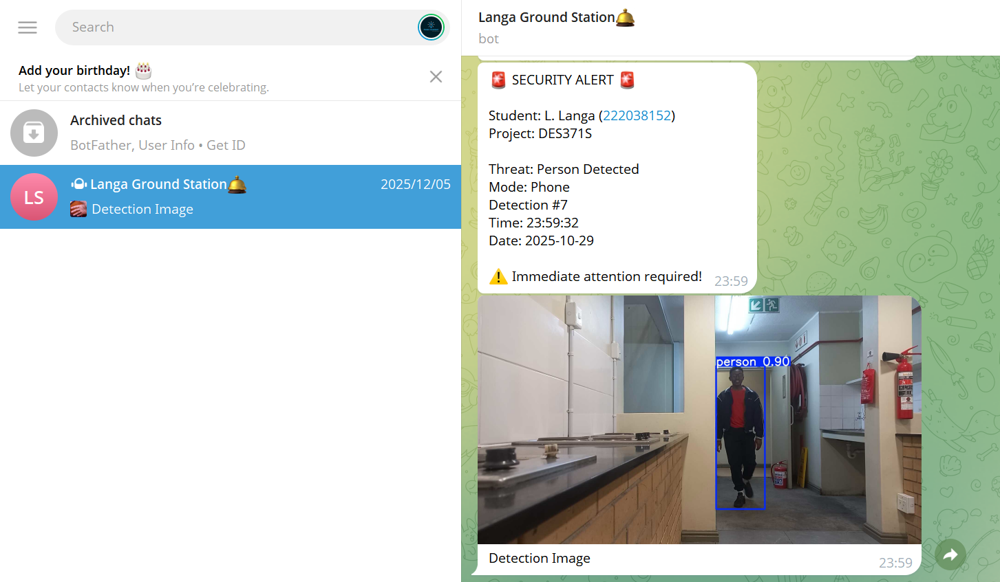
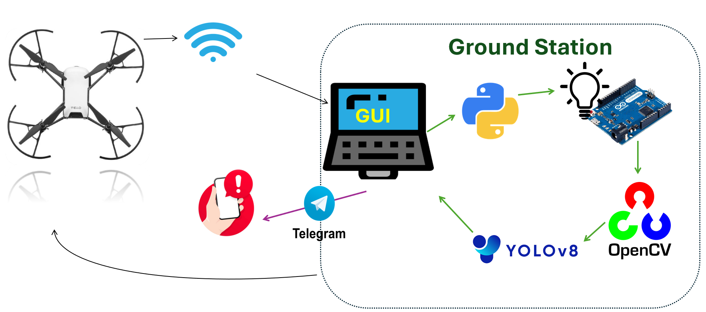
Software-Defined Network System
Advanced Network Optimization with IS-IS, OSPF, and BGP
Project Overview
Designed and implemented a comprehensive software-defined networking solution demonstrating mastery of advanced routing protocols and network optimization. The project showcases ability to work with enterprise-grade networking technologies and apply software engineering principles to infrastructure management.
Key Features
- Implementation of IS-IS (Intermediate System to Intermediate System) protocol for efficient intra-domain routing
- OSPF (Open Shortest Path First) configuration with area-based hierarchical network design
- BGP (Border Gateway Protocol) setup for inter-autonomous system routing and policy-based path selection
- Custom optimization algorithms for traffic routing based on bandwidth utilization and latency metrics
- Automated performance monitoring system with real-time dashboards and alerting capabilities
- Python-based control plane for centralized network management and policy enforcement
- Comprehensive logging and analytics for network behavior analysis and troubleshooting
Technical Implementation
The architecture follows SDN principles with separation between control and data planes. Python scripts interact with network devices through APIs to configure routing protocols dynamically. Implemented custom metrics collection using SNMP and developed data visualization dashboards for real-time monitoring.
Network Topology
- Multi-area OSPF design with backbone area and two stub areas for scalability
- IS-IS implementation across core routers with Level 1 and Level 2 routing hierarchy
- BGP peering with multiple autonomous systems including eBGP and iBGP configurations
- Redundant paths with automatic failover mechanisms for high availability
Results & Impact
Successfully demonstrated enterprise-level network design with sub-50ms convergence time after link failures. The automated monitoring system reduced troubleshooting time by 70% through predictive analytics and proactive alerting. Project received recognition for practical applicability and thorough documentation.
Network Diagrams & Screenshots
Computer & Internetwork Security GA5
CPUT Inter-Campus Network Security Upgrade — Bellville & District Six
Project Overview
Designed and tested a security upgrade for a simulated CPUT inter-campus network connecting Bellville and District Six. The work addressed inter-campus traffic interception, perimeter-router brute-force attempts and reconnaissance by combining a site-to-site IPsec VPN, router-management hardening, access control and an inline IPS design in Cisco Packet Tracer.
Security Controls Implemented & Evaluated
- IPsec VPN: Protected inter-campus traffic and verified active security associations and successful end-to-end connectivity.
- Production design: Documented an IKEv2/AES-256/SHA-256 design while clearly separating Packet Tracer's feature limitations from the production recommendation.
- Management-plane hardening: SSHv2, AAA, management ACLs, login blocking and Quiet-Mode behaviour were tested.
- External attacker testing: A host on the external 203.0.113.0/24 network was used to test unauthorised management access.
- IPS design: Inline IPS placement was incorporated into the secure architecture and discussed as part of the defence-in-depth design.
Evidence & Engineering Reflection
The submission recorded successful protected user connectivity, authorised administrator SSH access and rejection of unauthorised management attempts. It also documented a WAN ACL sequence-order problem rather than hiding it: a broad permit preceded a later SSH deny, so the observed management blocking was attributed to the VTY ACL and a corrected ACL order was specified for implementation.
Packet Tracer Evidence
NGN580S GA5 — Controller-Driven MPLS Traffic Engineering
OpenDaylight, PCEP, RESTCONF and RSVP-TE in a GNS3 IOS XRv testbed
Project Overview
Integrated three Cisco IOS XRv 6.1.2 routers in a GNS3 full mesh with an OSPF underlay, LDP and RSVP-TE. R1 connected to OpenDaylight 0.20.2 Karaf using eBGP, while R1, R2 and R3 operated as stateful PCEP clients. OpenDaylight was configured and exercised through RESTCONF requests from Postman.
What Was Demonstrated
- Verified OSPF adjacency, LDP operation and PCEP sessions across all three routers.
- Delegated an existing LSP to the controller and changed its path from R1–R2–R3 to the direct R1–R3 path.
- Created, removed and re-instantiated controller-managed LSPs through OpenDaylight.
- Carried 6,500 UDP datagrams through the controller-managed LSP with no loss in the recorded test.
- Used the student-created
ga5_netcheck.pyverification tool, which passed all five checks.
Important Technical Interpretation
The route object was explicitly written in Postman and sent through OpenDaylight. The demonstrated paths were therefore controller-enforced explicit routes; the report does not claim that OpenDaylight independently computed the path from its Traffic Engineering Database.
NGN580S Final Summative — Traffic Engineering Application
Live telemetry, congestion detection, path selection and controller-based MPLS-TE automation
Engineering Problem
The application was built to detect when the R1→R3 demand would overload the OSPF transit route R1–R2–R3, compare feasible candidate paths, act through the SDN controller and then prove the network result using router CLI evidence.
Application Architecture
A Tkinter front end is separated from logic, telemetry, traffic-engineering and LSP workflow modules. RESTCONF provides the controller interface, while a read-only Paramiko SSH adapter retrieves router evidence. Network calls run in worker threads so the GUI remains responsive.
Measured Results
- Congested transit path measured at 92.7% utilisation.
- Direct R1–R3 candidate measured at 42.6%, a 50 percentage-point improvement.
- All six required final tests passed.
- Provisioning was verified after 3 seconds, rerouting after 21 seconds and teardown after 3 seconds.
- Recorded iperf3 tests showed 0% datagram loss, including 10,454 baseline datagrams and 47,052 datagrams at the 815 kbit/s test rate.
- When the controller was unavailable, the GUI reported UNKNOWN and disabled controller actions rather than guessing state.
Engineering Limitation Identified
The project documented an OpenDaylight add-lsp acknowledgement issue in the tested release.
Message tracing was used to identify the BGPCEP behaviour and a release-specific workaround was recorded,
rather than treating the controller as a black box.
FM Transmitter & Receiver System
Custom RF Communication with Digital Signal Processing
Project Overview
Designed and built a complete FM radio communication system from scratch, including both transmitter and receiver circuits. The project demonstrates deep understanding of RF (Radio Frequency) electronics, analog circuit design, and digital signal processing principles.
Key Features
- Custom-designed FM transmitter operating in the 88-108 MHz frequency band with adjustable carrier frequency
- Frequency modulation circuit with audio input processing and pre-emphasis for improved signal-to-noise ratio
- RF amplification stage providing 100mW output power with efficient power management
- Superheterodyne receiver architecture with intermediate frequency (IF) amplification at 10.7 MHz
- Automatic frequency control (AFC) for stable signal reception and frequency locking
- Audio amplification circuit with volume control and de-emphasis for balanced frequency response
- Power supply design with voltage regulation ensuring clean DC power for sensitive RF components
- PCB layout optimized for RF performance with proper impedance matching and minimal interference
Technical Implementation
The transmitter uses a voltage-controlled oscillator (VCO) with varactor diode for frequency modulation. The audio signal is conditioned through pre-emphasis filtering before modulating the carrier. The receiver employs a superheterodyne design with local oscillator, mixer, IF amplifier, and discriminator for demodulation. All circuits were prototyped on breadboard, tested, and then transferred to custom PCB designs.
Circuit Design Details
- Oscillator circuit using Colpitts configuration for stable frequency generation
- RF amplifier with Class C operation for maximum efficiency
- Impedance matching networks using LC circuits for optimal power transfer
- Antenna design with quarter-wave monopole for efficient radiation
- Noise filtering using capacitors and RF chokes at strategic points
Results & Impact
Successfully achieved wireless audio transmission over 50 meters with clear audio quality and minimal distortion. The project required extensive troubleshooting and optimization of RF circuits, providing valuable hands-on experience with analog electronics and electromagnetic principles. Demonstrated ability to work with complex analog systems and apply theoretical knowledge to practical implementations.
Circuit Schematics & Photos
WebGL Flappy Bird Game
Interactive Browser-Based Game with Real-Time Rendering
Project Overview
Developed an interactive browser-based game inspired by Flappy Bird using WebGL for 3D graphics rendering and JavaScript for game logic. The project demonstrates proficiency in computer graphics, game development principles, and front-end web technologies while creating an engaging user experience.
Key Features
- WebGL-based 3D rendering engine with texture mapping and sprite animation for smooth visual experience
- Real-time physics simulation including gravity, collision detection, and momentum calculations
- Event-driven architecture handling user input (keyboard, mouse, touch) with responsive controls
- Score tracking system with local storage for high score persistence across sessions
- Dynamic difficulty adjustment increasing challenge as player progresses
- Particle effects for visual feedback on collisions and score milestones
- Responsive design adapting to different screen sizes and aspect ratios
- Optimized render loop achieving 60 FPS on modern browsers with efficient GPU utilization
Technical Implementation
The game engine uses WebGL's programmable pipeline with custom vertex and fragment shaders for rendering. Implemented a game loop pattern with fixed time step for consistent physics across different frame rates. Collision detection uses axis-aligned bounding boxes (AABB) with spatial partitioning for performance. Asset loading system preloads textures and sounds before game start to prevent lag during gameplay.
Game Development Concepts
- State machine pattern for managing game states (menu, playing, game over, paused)
- Object pooling for efficient memory management of game entities
- Procedural generation algorithm creating random but fair obstacle patterns
- Interpolation techniques for smooth animation between frames
- Audio management with background music and sound effects using Web Audio API
Results & Impact
Successfully created a fully playable game deployed on GitHub Pages demonstrating end-to-end web development skills. The project showcases understanding of graphics programming, game mechanics, and user experience design. Received positive feedback for smooth gameplay and polished visual presentation. Code structured with modularity and maintainability in mind, following best practices for JavaScript development.
Game Screenshots
Embedded Energy-Aware Washing Machine Controller
Arduino-based control logic with sensor feedback and energy-aware operating behaviour
Project Overview
Developed an Arduino-based embedded controller that combines sensor feedback, operating-state logic, status monitoring and energy-aware decisions. The project demonstrates hardware-software integration, C/C++ programming, input validation and practical troubleshooting of an electromechanical control prototype.
Engineering Focus
- Embedded C/C++ control logic and state transitions.
- Sensor-driven monitoring and control decisions.
- Hardware/firmware integration and structured debugging.
- Energy-aware operating logic and safe control behaviour.
IEEE Six-Bus Power System Analysis & Protection Study
Load flow, network modelling, short-circuit analysis and overcurrent protection
Project Overview
Analysed an IEEE-style six-bus transmission network using a common 150 MVA, 132 kV base. The work covered per-unit conversion, branch calculations, Ybus formation and Newton-Raphson load-flow analysis, supported by MATLAB/Simulink and DIgSILENT PowerFactory models.
Technical Work
- Converted network quantities to a common per-unit base and formed the bus-admittance matrix.
- Applied Newton-Raphson bus-state updates to evaluate voltage magnitudes, phase angles and power balance.
- Modelled the six-bus network in MATLAB/Simulink and DIgSILENT PowerFactory.
- Documented a three-phase short-circuit study using IEC 60909 settings.
- Evaluated overcurrent protection using current-transformer and relay settings/characteristics.
Portfolio Note
The public portfolio version focuses on the technical implementation and engineering methods. Student-identifying submission material and assessment-specific information are intentionally excluded.
Network Traffic Engineering & Optimization
Advanced Optimization using Graph Theory and Linear Programming on GEANT2 Topology

Project Overview
Developed a comprehensive network traffic engineering solution using mathematical optimization techniques on the GEANT2 topology - a real-world European research and education network with 32 nodes (major cities) and 54 bidirectional links. The project demonstrates mastery of graph theory, linear programming, and network optimization algorithms to achieve efficient traffic routing while minimizing congestion and cost.
Key Features
- Multi-Model Optimization: Implemented three distinct optimization approaches - Min-Cost Flow (cost minimization), Min-Max Utilization (load balancing), and Multi-Commodity Flow (simultaneous multi-flow routing)
- Dijkstra's Algorithm: Computed shortest paths with O((V+E)logV) complexity for efficient route discovery between Zagreb (node 21) and Barcelona (node 25)
- Linear Programming Formulation: Developed complete mathematical models with flow conservation constraints, capacity limits, and non-negativity conditions
- Single-Commodity Flow (SCF): Optimized 250 Mbps traffic flow achieving 10% maximum utilization on shortest path (cost = 4,000)
- Multi-Commodity Flow (MCF): Simultaneously routed 5 traffic demands totaling 1,000 Mbps (100, 150, 200, 250, 300 Mbps) with 14% maximum utilization
- Load Balancing: Min-Max model distributed traffic across 26 links achieving 0.83% maximum utilization for network resilience
- Statistical Analysis: Comprehensive performance metrics including mean utilization (4.57%), standard deviation (4.06%), and bottleneck identification
- Network Visualization: Created detailed topology diagrams, shortest path visualizations, and utilization heatmaps using NetworkX and Matplotlib
Mathematical Framework
The project applies rigorous mathematical formulations to network optimization problems. The core framework models the network as a directed graph G=(V,E) where V represents nodes (cities/routers) and E represents links with associated capacities and weights. Each optimization model solves a constrained linear program:
- Decision Variables: f_ij^k representing flow of commodity k on link (i,j)
- Objective Functions: Minimize total cost Σc_ij·f_ij or minimize maximum utilization α
- Flow Conservation: Ensures data in equals data out at each intermediate node (Kirchhoff's law analogy)
- Capacity Constraints: Total flow on each link cannot exceed its capacity (Σf_ij^k ≤ c_ij)
- Non-negativity: All flow variables must be positive (f_ij^k ≥ 0)
Technical Implementation
The solution architecture leverages Python's scientific computing ecosystem. NetworkX library provides graph data structures and built-in algorithms including Dijkstra's shortest path. PuLP linear programming library formulates and solves optimization problems with CBC solver backend. The implementation includes automated demand generation based on student number, topology creation with 32 nodes and 54 edges, and comprehensive result visualization using Matplotlib.
Algorithm Details
- Dijkstra's Shortest Path: Priority queue-based algorithm computing minimum-cost paths with O((V+E)logV) time complexity
- Min-Cost Flow: Linear program minimizing Σw_ij·f_ij subject to flow conservation and capacity constraints
- Min-Max Utilization: Minimizes maximum link load (α) ensuring balanced network utilization and resilience
- Multi-Commodity Flow: Extends single-flow optimization to K simultaneous demands with shared link capacities
- Capacity Allocation: Ring topology with 2,500 Mbps base capacity, cross-links with 10,000 Mbps for long-distance connections
Optimization Results & Analysis
All optimization models achieved optimal solutions without demand scaling (scaling factor = 1.0). The shortest path from Zagreb to Barcelona was computed as 21→20→26→25 with total cost of 16 and 3 hops. SCF Min-Cost model achieved lowest total cost (4,000) but concentrated traffic on 3 links with 10% max utilization. SCF Min-Max model distributed load across 26 links achieving excellent balance (0.83% max utilization). MCF model successfully routed 5 commodities simultaneously with moderate cost (21,550) and 14% maximum utilization across 14 active links.
Statistical Findings
- Network Efficiency: GEANT2 topology is well-provisioned with maximum utilization only 14% under full load
- Bottleneck Analysis: Ljubljana-Bratislava link identified as most utilized (10% in SCF) due to lower capacity (2,500 Mbps)
- Load Distribution: Min-Cost shows skewed load (variance 4.33%), Min-Max shows uniform distribution (variance 0.28%)
- Path Diversity: GEANT2's ring-and-cross topology provides sufficient redundancy with 54 links for 32 nodes
- Quartile Analysis: Median utilization 3.0% (MCF), 2.5% (SCF Min-Cost), 0.83% (SCF Min-Max)
Cost vs. Resilience Trade-off
The project clearly demonstrates the fundamental trade-off in network engineering between cost optimization and resilience. Min-Cost routing achieves lowest operational cost but creates vulnerability by concentrating traffic on shortest paths - a single link failure could disrupt entire flows. Min-Max routing ensures robust operation through balanced load distribution but requires more active links and higher total cost. The MCF model offers a practical middle ground, achieving reasonable cost while maintaining moderate load distribution suitable for production networks.
Real-World Applications
- OSPF Routing: Similar to Min-Cost approach using Dijkstra's algorithm for shortest-path routing in enterprise networks
- MPLS Traffic Engineering: Comparable to Min-Max approach providing load-balanced, constraint-based routing
- SDN Controllers: Modern software-defined networks (Google B4, Microsoft SWAN) use MCF-style optimization for dynamic routing
- Internet Backbone: ISPs apply traffic engineering to balance loads across diverse paths and prevent congestion
Results & Impact
Successfully delivered a production-grade network optimization framework demonstrating deep understanding of graph algorithms, linear programming, and network engineering principles. The project received excellent academic feedback for mathematical rigor, comprehensive documentation, and practical applicability. All models achieved optimal convergence confirming correct constraint formulation and solver configuration. The analysis provides actionable insights for real-world network operators balancing cost, performance, and resilience requirements.
Network Visualizations & Results